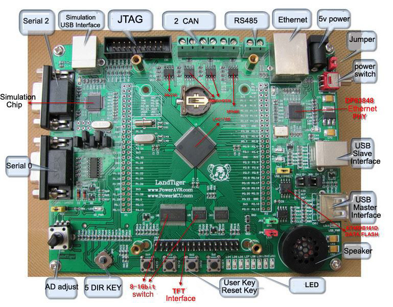

The LandTiger V2.0 NXP LPC1768 ARM development board is based on a secondgeneration
ARM Cortex-M3 microcontroller, a high-performance, low-power 32-bit
microprocessor designed for embedded system applications, suitable for instrumentation,
industrial communications, motor control, lighting control, alarm systems, and other fields.
The board supports USB2.0 Device and Host, dual CAN interfaces, RS-485 interface and an
on-board USB emulator for JLINK. The development board is supported by a rich set of
example software and detailed information to facilitate the users to quickly project
development. A short feature overview:
Powerful LPC1768 MCU Cortex-M3 core:
- Clock frequency up to 100MHz.
- Includes support of eight areas of memory protection unit (MPU).
- Built-in Nested Vectored Interrupt Controller (NVIC).
- 512KB on-chip Flash program memory, supports in-system programming (ISP) and In
Application Programming (IAP).
- 64KB SRAM for high-performance CPU access through the instruction bus, system
bus, data bus access.
- AHB multi-layer matrix with 8-channel general-purpose DMA controller (GPDMA).
- Supports SSP, UART, I2C, I2S, ADC, DAC, Timer, PWM, GPIO, etc., can be used
for memory-to-memory transfer.
- Standard JTAG test / debug interface and a serial wire debugging and serial wire
tracking port option.
- Simulation trace module supports real-time tracking.
- 4 low-power modes: sleep, deep sleep, power-down, deep power-down.
- Single 3.3V power supply (2.4V - 3.6V).
- Operating temperature: -40° C - 85° C.
- Non-maskable interrupt (NMI) input.
- On-chip integrated power-on reset circuit.
- Built-in systems timer (SysTick), to facilitate operating system migration.
Onboard resources:
- 2 RS232 serial interfaces (using straight-through serial cable), (RS232 Transceiver:
SP3232). One serial port supports ISP download of programs.
- 2 CAN bus communication interfaces (CAN Transceiver: SN65VHD230).
- RS485 communication interface (485 Transceiver: SP3485).
- RJ45-10/100M Ethernet network interface (Ethernet PHY: DP83848).
- DAC output interface, on-board speaker and speaker output driver (LM386).
- ADC input interface, on-board adjustable potentiometer input.
- Color LCD display interface (supports 2.8-inch or 3.2-inch color TFT 320X240).
Touchscreen supported through SPI interface.
- USB2.0 Interface, USB host and USB Device interface.
- SD/MMC card (SPI) interface.
- I2C Interface, connected to onboard 2Kbit EEPROM (24LC02).
- SPI serial interface connected to onboard 16Mbit Flash (AT45DB161D).
- 2 user keys, 2 function keys (INT0 and Reset button).
- 8 LED lights (Digital outputs).
- Five-way joystick button (Digital Inputs).
- Serial ISP download support (COM0).
- Standard JTAG download, simulation debugging interface.
- Integrated JLINK compatible emulator (USB): support online simulation and debug
capabilities, support KEIL, IAR and other mainstream development environments.
- Optional external 5V power supply or USB input to provide 5V power supply.
- Breakout available for all the IOs, user-friendly connection of external application
development circuits.
